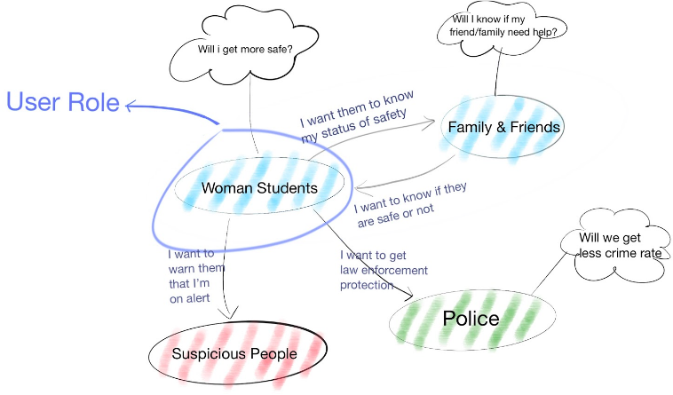
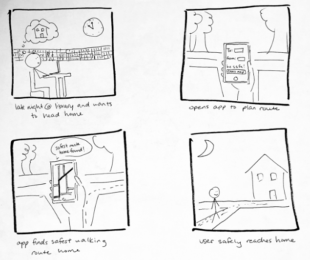

Creating a map that guide users safely from A to B.
Focusing on UX & UI design.
At a Glance
School
Cornell University
Course
Human Computer Interaction Design
Responsibilities
Conducted contextual interviews
Administered heuristic evaluations
Created low-fidelity & high-fidelity prototypes
Ran usability tests
Tools
Balsamiq
Sketch
InVision
Adobe Photoshop
About the Project
I worked on a team of six as a UX Designer to solve a design challenge for a social issue. Our group focused on women safety around Cornell University. The Safety Map app was created from a concept idea and finalized with an InVision App prototype.
Understanding what makes women feel safe vs. threatened
Through extensive user research and interviews with women on campus regarding their personal safety, we were able to identify situations where women felt most threatened and other important metrics that women considered for safety.
Women feel most unsafe when walking alone at night and in unfamiliar areas because they do not know what to expect on their route.
Social model for current system status
This social model depicts how women interact with their social environment. The sense of safety is largely dependent on how women feel about their entities of interaction, thus a clear definition of how each actors in the social environmental interact with our main user group gives a clear picture of the current problem status.
Storyboard
This storyboard addresses the user's goal of being able to walk home alone safely late at night. In the first frame, the user is at the library, and after working there till late night, is now thinking about going home. Second frame shows the phone screen of the safety app, and the user can now enter her location and destination to then check the map. The map is shown in the third frame as the app takes the location input and generates the safest route based on certain factors. The last frame shows the user safely reaching her destination after following the path the app denoted.
The Design Process
Creating & testing for the key safety metrics
The design solution was to create a map for users that displays the safest route to a destination based on real-time street information data such as: foot traffic, street lighting, past crimes, and blue lights (Cornell's emergency phones). The goal of "Safety Map" was for users to quickly identify the safety metrics that were most important when assessing a safe route. Additionally, users need instant access to call the police if necessary.
The findings from user testings and heuristic evaluations revealed that labeling the icons minimizes the guesswork that users would have to do when using "Safety Map."
Adopting rapid iterations and prototyping
A series of rapid prototyping and user testings were involved in our agile design sprints. This approach allowed us to quickly identify heuristic flaws and rectify the errors for the next iteration.
Wireframing the user flow
User testing designs
We conducted 4 rounds of usability testings and heuristic evaluations. We took the results from each user testings to iterate on the next level of design.
Final Prototype in InVision